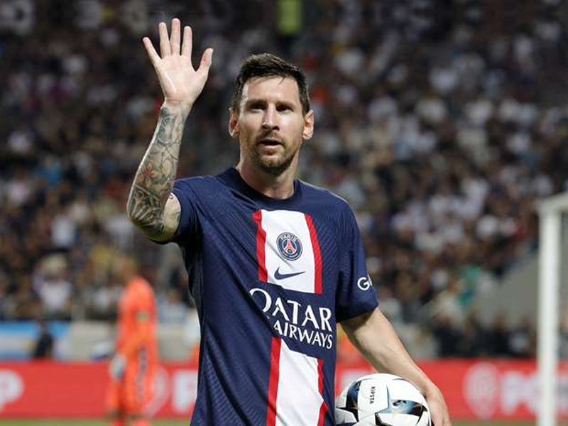

Durante su estadía en el PSG, Messi jugó un total de 74 partidos, anotando 32 goles y proporcionando 34 asistencias.
A pesar de su buen desempeño individual, el equipo no logró conquistar la Champions League, un objetivo que se había planteado desde su llegada.
Lionel Messi ganó dos títulos con el Paris Saint-Germain (PSG): la Ligue 1 de la temporada 2021-2022 y el Trofeo de Campeones en 2021. Estos logros se suman a los numerosos títulos obtenidos con el FC Barcelona y con la selección argentina.
La salida de Lionel Messi del Paris Saint-Germain (PSG) fue oficializada por el club en junio de 2023. . El PSG agradeció a Messi por su desempeño y lo consideró “el mejor jugador de la historia” durante su tiempo en el club
